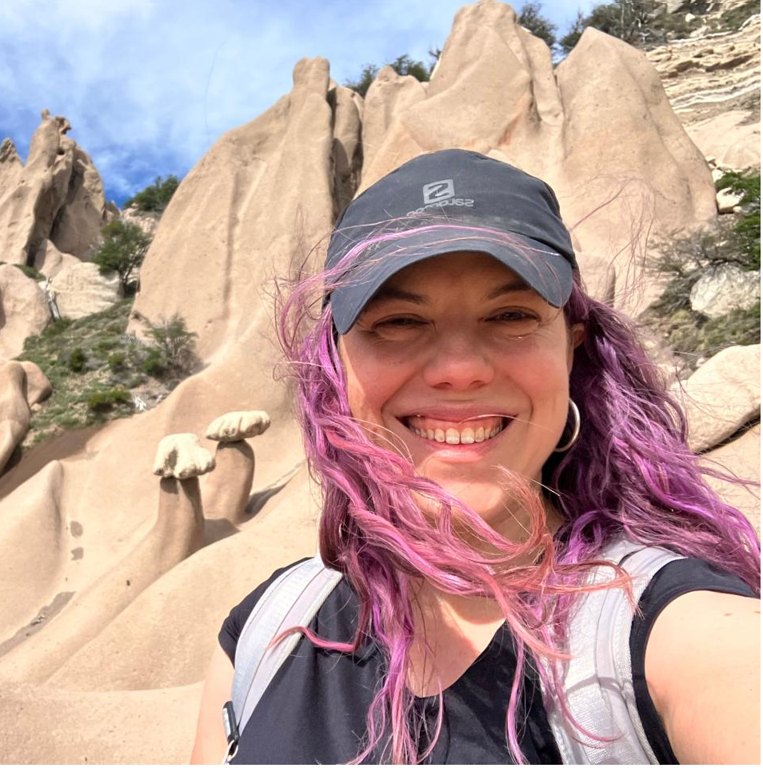

Comunica tus datos con R y Quarto
R-Ladies Buenos Aires
https://jformoso.github.io/quarto-untref-2025/
Mientras esperás a que comencemos…
Asegurate de haber seguido las instrucciones de configuración y que tengas los programas y paquetes que necesitás para seguir el taller:
Este encuentro es posible por el apoyo de:


Codigo de conducta
Todos los espacios de participación de R-Ladies Global y RLadies Buenos Aires, incluyendo reuniones presenciales o virtuales, Twitter, Slack y listas de correo se rigen por el Código de conducta de RLadies.
Licencia
Estos materiales están publicados bajo la licencia Creative Commons Attribution-NonCommercial-ShareAlike 4.0 International (CC BY-NC-SA), la cual implica:
- Atribución: Podés compartir y adaptar el material siempre que reconozcas la autoría de forma adecuada.
- Uso no comercial: No está permitido usar el material con fines comerciales.
- Compartir igual: Si adaptás o transformas el material, debés distribuirlo bajo la misma licencia.
Organizadoras

Betsabé Cohen

Virginia García Alonso
María Nanton

Jesica Formoso
Quarto
¿Qué es y para qué sirve Quarto?

Entorno integrado para combinar código (soporte múltilenguaje), texto y visualizaciones en un único documento interactivo y reproducible.
¿Qué es y para qué sirve Quarto?
Archivos .qmd
Estructura de un .qmd
- Encabezado YAML
- Bloques de código (chunks)
- Texto markdown
Estructura de un .qmd
Encabezado YAML
- Define las configuraciones y metadatos del documento.
- Sintaxis tipo clave: valor
Estructura de un .qmd
Bloques de código (chunks)
- Permiten ejecutar código dentro del documento
Estructura de un .qmd
- Texto markdown
- Integra encabezados de sección, hipervínculos, imágenes, código y resultados en el texto.
Modos del editor de RStudio
Proyectos de Quarto
¿Qué es un proyecto de Quarto?
Una carpeta que contiene un archivo
_quarto.ymlque vincula todos los documentos ubicados en esa carpeta.Permite aplicar configuraciones comunes, compartir metadatos y renderizar múltiples documentos a la vez
Tipos de proyecto de Quarto
default: proyecto genérico
website: sitio web navegable
book: libro (capítulos, índice automático)
manuscript: manuscrito científico o académico
Plantillas listas para publicar
Podés usar templates preconfigurados para escribir manuscritos científicos según los requisitos de distintas editoriales y journals, como PLOS, Elsevier, Nature, arXiv, MDPI, APA, entre otros.
Estas plantillas incluyen formato, estilo de citas, metadatos y estructura listos para exportar a PDF o HTML con un solo comando.
Nos vamos a R
Antes de que te vayas..
Seguinos
@rladiesba
@RLadiesBA
RLadies Buenos Aires
@RLadiesBuenosAires
https://rladiesba.netlify.app/
¡No te pierdas las novedades!
¿Querés presentar en un meetup de R-Ladies?
üí° ¬øTen√©s un tema que te entusiasma?
üì¶ ¬øUsás un paquete que te encanta?
üìä ¬øQuer√©s compartir un análisis de datos o tu flujo de trabajo?
üîó Escribinos a rladiesba@gmail.com o por nuestras redes.
ü§ù ¡Te acompa√±amos en el proceso!